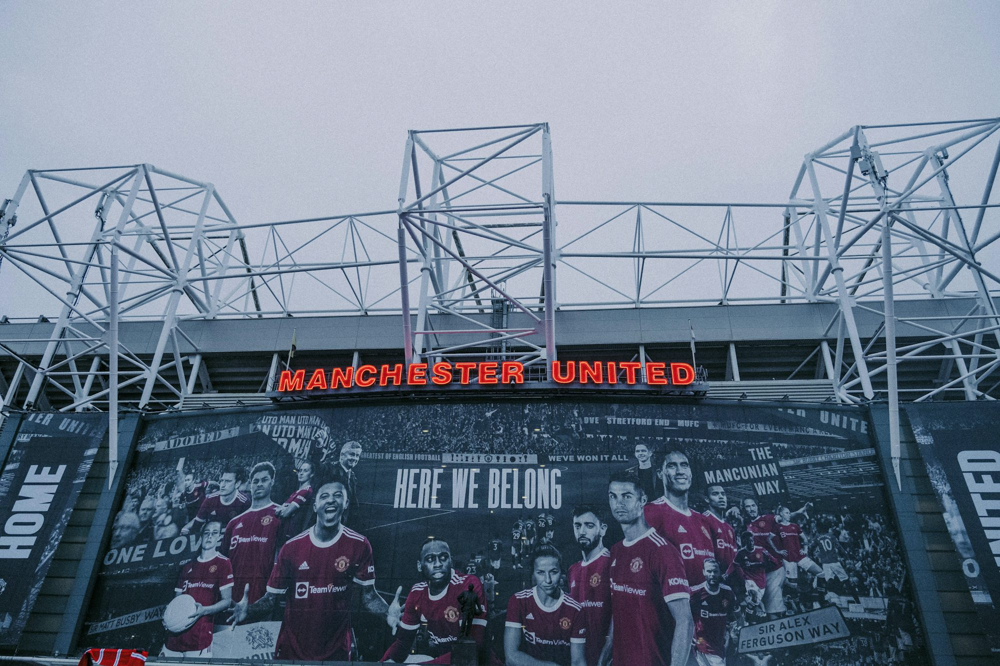

El papel de la tecnología para mejorar la experiencia del estadio deportivo
Una exploración de cómo las innovaciones tecnológicas están transformando la experiencia de los fanáticos en los estadios deportivos modernos.
A medida que avanzamos hacia la era digital, la tecnología continúa remodelando varios aspectos de nuestras vidas, y el mundo del deporte no es la excepción. Los estadios deportivos modernos están integrando cada vez más tecnologías de vanguardia para mejorar la experiencia para fanáticos, atletas y organizadores de eventos por igual. Desde tableros de video de alta definición hasta sofisticadas aplicaciones móviles, estas innovaciones están revolucionando la forma en que experimentamos eventos deportivos. Uno de los avances tecnológicos más destacados en los estadios es el uso de grandes pantallas de video. Estas pantallas de alta definición brindan a los fanáticos una experiencia de visualización mejorada, asegurando que cada momento del juego se captura en detalle. Por ejemplo, los estadios como el estadio AT&T en Texas cuentan con uno de los tableros de video de alta definición más grandes del mundo, lo que permite a los fanáticos ver repeticiones, estadísticas y acciones en vivo desde múltiples ángulos. Esto no solo mejora la experiencia para aquellos sentados lejos de la acción, sino que también involucra a la multitud, creando una atmósfera más vibrante. Además de los tableros de videos, los estadios adoptan cada vez más tecnologías inmersivas como la realidad aumentada (AR) y la realidad virtual (VR). Estas tecnologías proporcionan a los fanáticos experiencias únicas que van más allá de la visualización tradicional. Por ejemplo, algunos estadios ofrecen características AR a través de aplicaciones móviles que permiten a los fanáticos ver estadísticas adicionales, información de jugadores y contenido interactivo mientras miran el juego. Este nivel de compromiso alienta a los fanáticos a interactuar con su entorno de nuevas maneras, fomentando una conexión más profunda con el evento. Las aplicaciones móviles se han convertido en herramientas esenciales para mejorar la experiencia de los fanáticos en estadios deportivos. Estas aplicaciones proporcionan una gran cantidad de información, desde actualizaciones en tiempo real sobre puntajes de juegos y estadísticas de jugadores hasta detalles sobre concesiones y mercancías. Los fanáticos pueden acceder fácilmente a sus boletos, pedir comida e incluso navegar por el estadio usando estas aplicaciones. Por ejemplo, la aplicación de experiencia de los fanáticos en el estadio Mercedes-Benz en Atlanta permite a los usuarios pedir comida y bebidas de sus asientos, reduciendo significativamente los tiempos de espera y mejorando la comodidad general. Además, estas aplicaciones a menudo incorporan características de las redes sociales, lo que permite a los fanáticos compartir sus experiencias y conectarse con otros que asisten al evento. Otro aspecto significativo de la integración tecnológica en los estadios es el avance de las opciones de Wi-Fi y de conectividad. Con el creciente uso de teléfonos inteligentes y tabletas, el acceso confiable a Internet es crucial para los fanáticos que desean compartir sus experiencias en las redes sociales o acceder a actualizaciones en vivo. Muchos estadios modernos han invertido en redes Wi-Fi robustas que pueden acomodar a miles de usuarios simultáneamente. Esta conectividad no solo mejora la experiencia del ventilador, sino que también permite a los estadios recopilar datos valiosos sobre el comportamiento y las preferencias del ventilador, lo que permite mejorar los servicios en el futuro. Además, la tecnología juega un papel vital en la mejora de la seguridad dentro de los estadios deportivos. Los sistemas de vigilancia avanzados, la tecnología de reconocimiento facial y las herramientas de gestión de multitudes ayudan a garantizar un entorno seguro para los fanáticos y los atletas. Por ejemplo, muchos estadios ahora utilizan sistemas de monitoreo en tiempo real que analizan los movimientos de la multitud, lo que permite al personal de seguridad responder rápidamente a cualquier problema potencial. Este compromiso con la seguridad no solo tranquiliza a los asistentes, sino que también mejora la experiencia general, lo que permite a los fanáticos centrarse en disfrutar del juego. Más allá de mejorar la experiencia de los fanáticos, la tecnología también está transformando la forma en que los atletas se preparan y compiten en sus deportes. La tecnología portátil, como rastreadores de acondicionamiento físico y uniformes inteligentes, proporciona a los atletas datos valiosos sobre su rendimiento, lo que permite un mejor entrenamiento y prevención de lesiones. Los entrenadores y equipos pueden analizar estos datos para tomar decisiones informadas sobre estrategias y salud de los jugadores. Como resultado, la integración de la tecnología en los estadios beneficia no solo a los fanáticos sino también a los propios atletas, creando un entorno deportivo más dinámico. A medida que miramos hacia el futuro, el papel de la tecnología en los estadios deportivos solo continuará creciendo. Las tecnologías emergentes, como la inteligencia artificial (IA) y el aprendizaje automático, tienen el potencial de mejorar aún más la experiencia de los fanáticos. Estos avances podrían conducir a experiencias personalizadas adaptadas a las preferencias individuales, lo que hace que cada visita al estadio sea única. Además, la integración de la tecnología blockchain para las ventas de boletos y mercancías puede mejorar la seguridad y la transparencia, abordando problemas comunes como el fraude y el escala. En conclusión, la tecnología está transformando fundamentalmente la experiencia del estadio deportivo para fanáticos, atletas y organizadores. Desde pantallas de video de alta definición y aplicaciones móviles hasta tecnologías inmersivas y sistemas de seguridad robustos, las innovaciones que se implementan en los estadios modernos mejoran todos los aspectos de la experiencia deportiva. A medida que estas tecnologías continúan evolucionando, darán forma al futuro de cómo nos involucramos con los deportes, creando un entorno que sea más interactivo, agradable y seguro. Como fanáticos, podemos esperar un futuro en el que la tecnología mejore nuestra pasión por los deportes, lo que hace que cada evento sea una experiencia memorable.
05/24/24
Ethan Carter